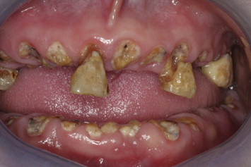

Short-Term Effects
The things which grip our minds
There are many effects of the consumption of methamphetamine or crystal meth. Some of these take long periods to manifest, others are brought about from only a couple of doses. It is amazing that despite these symptoms people still take the drug. I hope to keep you from that horror. So, here I will detail many of the short-term effects. Remember that these are effects that can happen after a single dose. There is a slew of these short-term effects an example of one is phycosis. Psychosis affects the brain's understanding of information it can cause erratic actions and warped perception. When psychotic it is often not just you who is hurt. Keep in mind that most of these symptoms affect the people around you as well. Meth can also cause disturbed sleep patterns, high blood pressure, high heart rate, and even seizures and death in higher doses. So what does meth actually do and why? Meth is a CNS stimulant meaning that it will keep you awake and stimulate your body. Though meth is particularly strong. It does this by releasing many chemicals into your brain. More details on what chemicals and what exactly meth does can be found in the Chemistry behind Meth section. Though I am sure you already knew most of that. What I find to be the most important question is why do people take meth? What is the purpose of harming oneself? These are ultimately questions that must be answered by you. However, I hope with the information in these articles your answers will shift. Look below for the aforementioned long-term effects.
Long Term Effects
A Desolated Body
Methamphetamine has a worse effect after long periods than it does after short periods. The gruesome image above is a testament to that. What you see is but one of the long-term effects. It is called "meth mouth" and starts to progress after around six months of taking meth. Some long-term physical effects are permanent damage to the blood vessels, heart, and organs. The mental symptoms go as such: Disorientation, apathy, Psychosis, and even damage to the brain similar to alzheimer's disease. But why does this happen? Simply because the body can not constantly be overworked and the brain can not survive with no rest. Simply think about the fact that after a while of taking meth you could start to lose all memories of your family, friends, and everything important to you. Meth is a dangerous game and with most dangerous games the best way to survive is to not play. Or else your body will likely become a desolated mess.
Getting Help

There are many ways to get help. Howevery meth has a very low recovery rate. So the best option is almost always to not use at all. Howevery, if help is required it usually costs $5,000$-10,000 a month for out of house treatment. Or around $30,000 a month for in-house treatment. Even then success rate is very low.
Popular Post
The articles above give more information and cited sources.